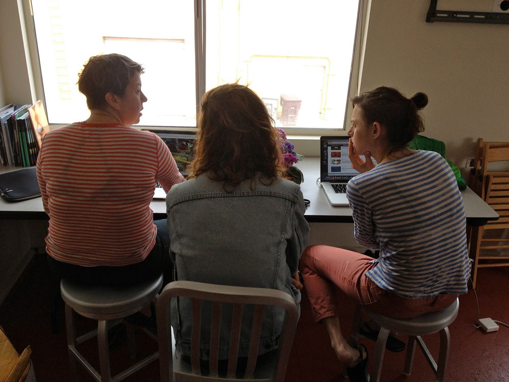
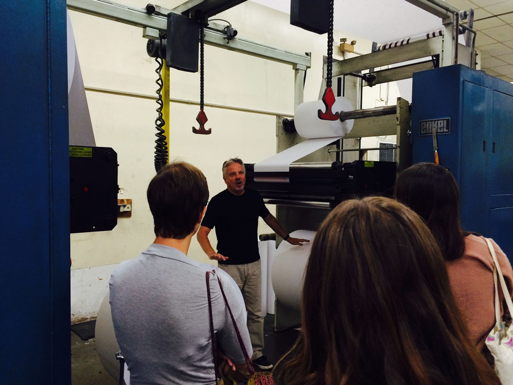
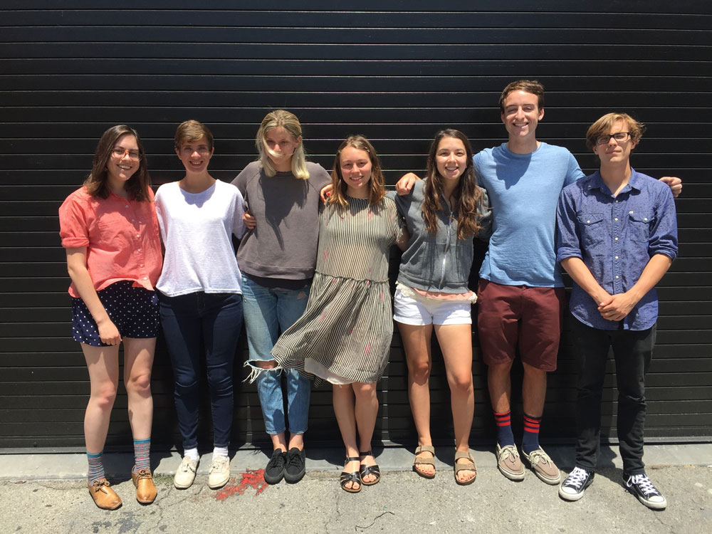

Overview
The Los Angeles Review of Books / USC Publishing Workshop is an immersive, collaborative publishing workshop designed for students and innovators interested in playing a role in the future of publishing. This holistic training seminar equips students with skills in both digital and print publishing and is unique among publishing seminars in its focus on producing live ventures by the summer’s end. The Los Angeles Review of Books / USC Publishing Workshop is a vanguard, real-world program whose graduates will go on to be among the most well-trained, experienced, competitive, and inventive in the industry.
The Course gives students a foundation in both traditional and future platforms, as they attend lectures, seminars, and boot camps in book, magazine, and online editing; digital and print publishing; SEO and audience metrics; and the financial and business side of publishing. Students will learn from a broad selection of experts who specialize in various aspects of the publishing industry, including editors, art directors, book historians, literary agents, marketing professionals, published writers, academic publishers, web coders, developers, and digital innovators. The signature project of the Course is a real world, hands-on practicum: the creation of a print magazine or website, or the development of a business plan for a new publishing enterprise that is ready either for direct funding or for research and development funding.

Students interested in print publishing will participate in staffing and co-publishing an annual Workshop print edition which features original content students acquire, curate, and edit specifically for the publication. This publication, to be named and branded by Workshop participants, is both an online Los Angeles Review of Books Channel and a print edition, distributed in Los Angeles and shipped to LARB Members.
Students will collaborate in cohorts, each of which will also generate a new publishing project and develop a business plan and funding proposal for that project. These students will work with program faculty and visiting industry experts to bring those projects into being, receiving the instruction they need and training in the tools and skillsets necessary to achieve real-world results. By the end of the Workshop, students will have participated in producing a viable publication or proposal, using the expertise they developed.
Students will be in residence at USC for five weeks, from June 26 – July 29, committing to a series of preparatory assignments before arriving in Los Angeles.

Course Topics
- How to edit short-form and long-form feature articles for a major magazine.
- The art of copyediting.
- How to be a part of and help run a new literary and cultural arts magazine, both in print and online.
- The editor-writer relationship.
- The history of the book, the state of independent publishing today, and possibilities for its future.
- Publicity, marketing, SEO, and social media.
- Current platforms and the future of media.
- Innovations in the world of culture and curation.
- Fiscal models: past, present, and future.
- How to write for and get published in a magazine.
- The art of print publishing: Color and dot correction, typeset, graphic design, print mechanics, and working with ink on paper.
- How to design a business plan.
- How to attract investors.
- The nonprofit world.
- Marketing
Career Placement
The Course is dedicated to launching students into the brave new world of 21st century publishing through the mentorship they receive during the program, through bringing publishers and investors to campus to meet the students, and through networking events in the Course’s final days.
